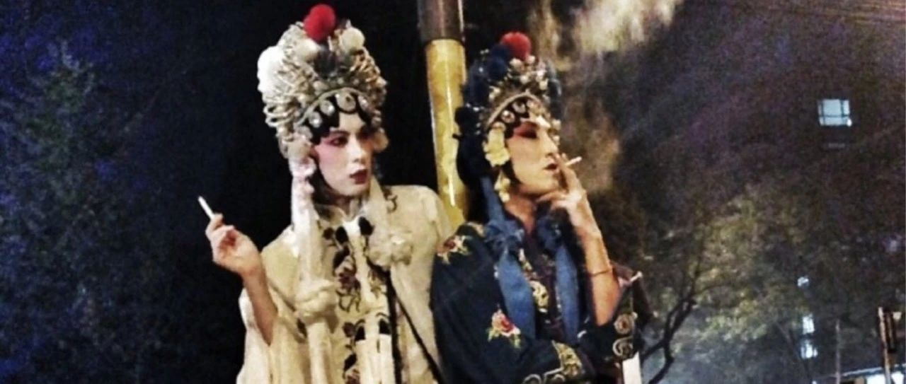

万圣夜COS，如何成为一场LGBTQ秀？
“万圣节在每年11月1日，而万圣节前夜（万圣夜）的10月31日是万圣节最热闹的时刻。万圣节原是西方纪念秋天农作物丰收的节日，传言这天要用农作物祭祀神明，此时亡者的灵魂会回来见家人，而恶魔也会现身，人们要用各种方式吓跑恶灵来除魔。后被基督教吸收，称为‘天下圣徒日’，记念教会史上殉道圣徒。” ——万圣节/万圣夜
过几天就是万圣节、万圣夜了，最近万圣节COS火出圈，尽管没有参与者的划分，但有人形容万圣节COS变成了一场LGBTQ性少数大秀、国版骄傲月游行。

看现场图，从COS《甄嬛传》的安陵容、《关于我和鬼变成家人的那件事》的许光汉，到COS向太、王菲、那英，这次的万圣节活动更像是一场本土化同志骄傲游行，有相当一部分是女男同性恋、跨性别等性少数群体，他们在万圣节扮成这些女性角色的装扮，和短视频搏流量男扮女装网红有本质不同，是对自我群体身份的认同与释放。
万圣节COS背后性少数群体的参与，本质上，是对同志身份的认同、展现与建构酷儿社群文化，也是一场对异性恋顺性别与男权文化的挑衅，和对异性恋霸权、父权制的反击。


因为完全无视所谓的“传统”“规范”“秩序”，与过中国传统节日相比，过万圣节没有任何包袱；你不用管别人怎么看，也不用烦亲戚的催婚催生问成绩的拜访，你可以脱开你的社会关系、家庭关系，完完全全成为自己想要成为的人物，在自己给自己做的新装扮中，变成另一个人，另一个本就如此的自己。
与其说扮得像“妖魔鬼怪”，不如说这才是多元包容下一个个鲜活叛逆的生命力。🌈

本文编辑：颜
参考资料：@呆若木鸡、@冷巷辛西娅、@一只朋克小狗、@会变形的喀耳刻、百度百科